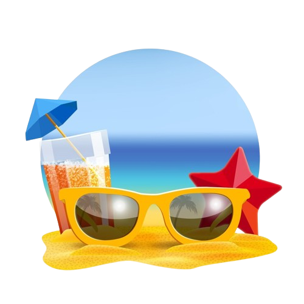

Missão
Facilitar a descoberta de destinos menos explorados, tornando acessíveis roteiros detalhados e inspiradores para viajantes que buscam experiências autênticas.
Comprometemo-nos a revelar a beleza e a riqueza cultural de lugares com baixa visibilidade, incentivando uma nova perspectiva de viagem.

Visão
Visualizamos um futuro em que os destinos com baixa visibilidade se tornem destinos desejados, graças à nossa comunidade apaixonada e aos roteiros envolventes que oferecemos.